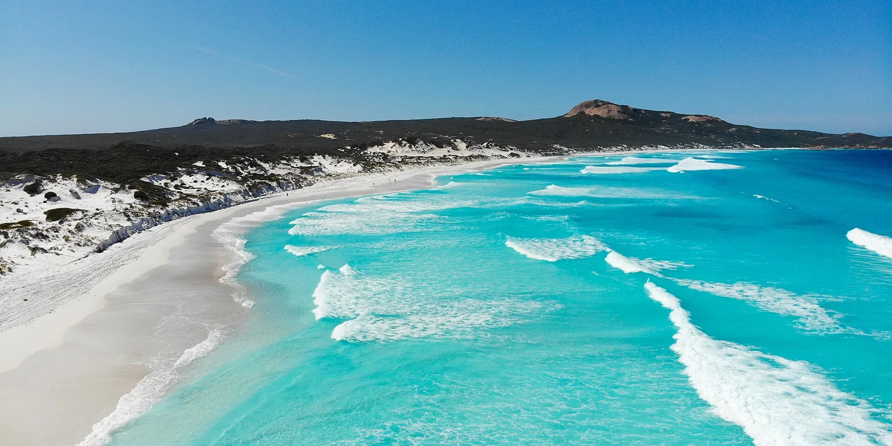

Lucky Bay
Esperance, Australie · baignade, kayak, snorkeling

Plage de sable blanc et d’eau turquoise où des kangourous viennent parfois sur le sable.
- Lieu
- Esperance, Australie
- Niveau
- Débutant
- Activités
- baignade, kayak, snorkeling
- Type d'eau
- Mer / océan
- Coordonnées
- -33.99, 122.23 (position approximative du secteur)
Dangers à connaître
- Eau fraîche.
- Faune sauvage.
Le conseil d'Ocean Buddy
Ne nourris jamais les kangourous.
Ouvrir dans Ocean Buddy Télécharger sur l'App Store
Source : Fiche Ocean Buddy · septembre 2026 · à vérifier localement.